ほうだいぎ周辺おすすめスポット
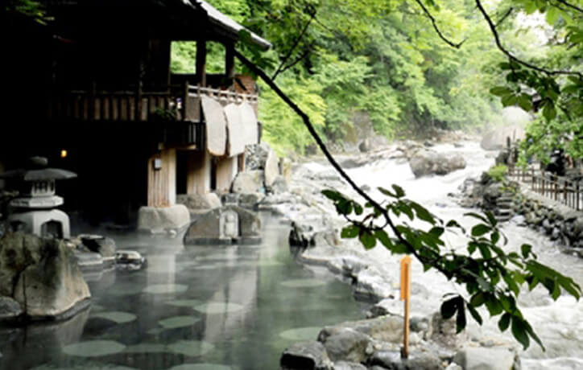
宝川温泉
巨石をふんだんに使った他を圧倒する自慢の大露天風呂です。手付かずの大自然に包まれ、宝川の清流を感じての入浴は心の底からの安らぎをお約束します。
キャンプ場からお車で約20分
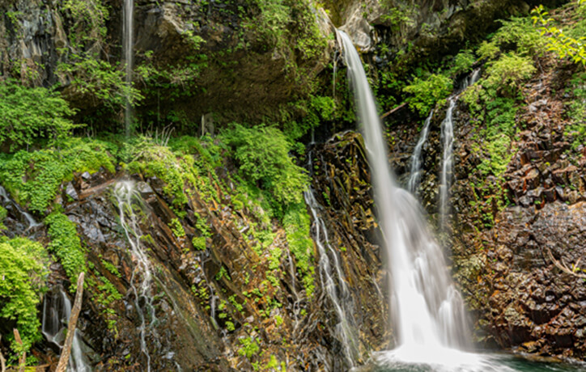
裏見の滝
宝来の滝とも呼ばれ、春の雪どけ水を集めて50ｍを落ちる水量の多さと、秋には紅葉が見ごたえある滝。観瀑台より眺めることができます。
キャンプ場からお車で駐車場まで2.4㎞約5分
駐車場から展望台まで徒歩約10分
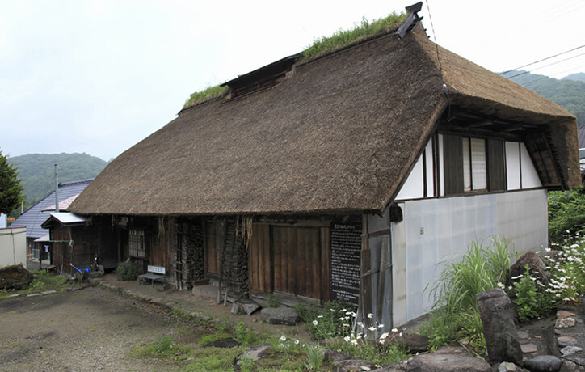
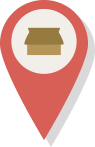
雲越家住居
豪雪に耐え、厳しい山村生活の歴史を如実に伝える雲越家住宅は、古さだけでなくこの家で実際に使われた生活道具のほとんどが残されているという点で、全国的にも貴重な文化遺産と考えられ、国の重要有形民俗文化財に指定されました。約110年前に使われた囲炉裏、炭焼き、機織りなどの懐かしい日本の風景が、手つかずのまま保存されています。
キャンプ場からお車で4.5㎞約8分
キャンプ場から徒歩で約50分
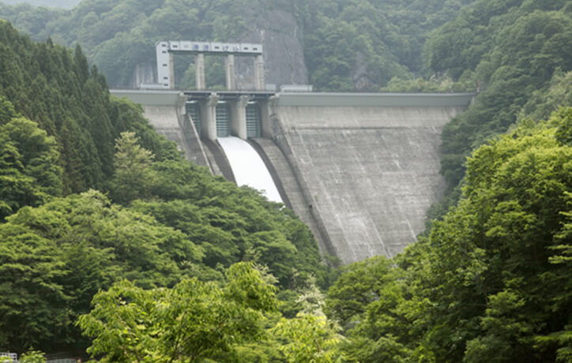
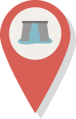
藤原ダム
藤原ダムは、重力式コンクリートダムで、利根川上流ダム群の1つとして、洪水調節を主目的に昭和27年から建設が開始され昭和33年5月に完成しました。このダムは、日本有数の豪雪地域にあり、その融雪水は首都圏の生活を支えています。雪解けシーズン（春～初夏にかけて）は、クレストゲートから放流を行っている時もあり、その様子を目にすることも出来ます。
キャンプ場からお車で約20分
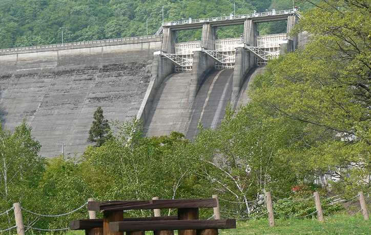
須田貝ダム
須田貝ダムは、戦前に東京電燈が中心となって計画した「奥利根電源開発計画」の一環として計画され、建設された唯一の水力発電用ダムです。上流には矢木沢ダムの他、奈良俣ダムなどの巨大ダムがあり、大規模なダムが集中する全国的にも珍しい地域です。
キャンプ場からお車で約20分
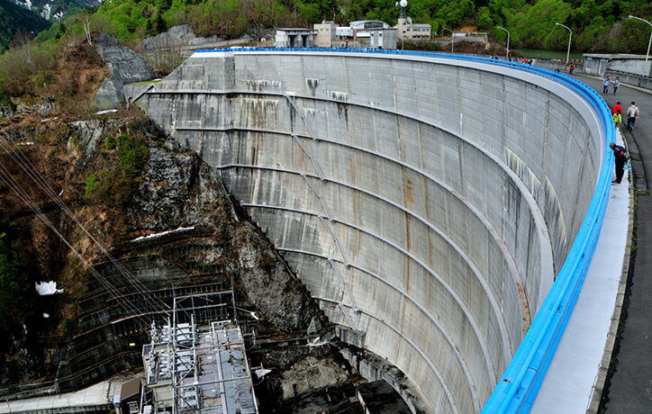
矢木沢ダム
矢木沢ダムは、利根川本線の最上流部に位置するアーチ式の多目的ダムです。このダムは厳しい地理的・気象条件を克服しつつ昭和42年に完成しました。ダム湖は奥利根4湖の中で最も大きく、周囲はブナなどの原生林に囲まれた秘境のムードを漂わせています。
キャンプ場からお車で約40分
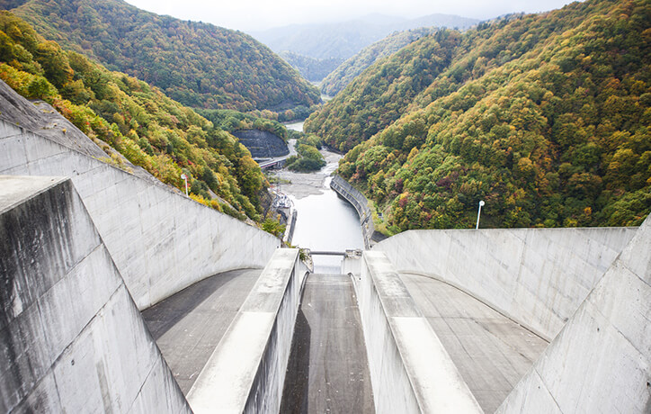
奈良俣ダム
利根川源流に近い支流・楢俣川に建設され、奥利根4ダムの中で最も新しいダムです。岩塊を台形に積み上げるロックフィル式で、158mの堤高は現在日本で三番目の高さです。 洪水調節・下流都市の水道用水の供給などを目的としています。
キャンプ場からお車で約35分
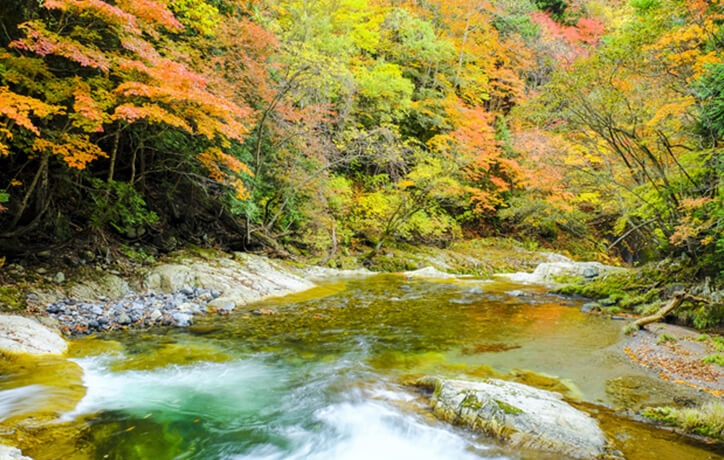
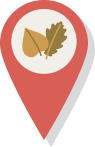
照葉狭
俳人 水原秋桜子が命名した秘境ムードに満ちた渓谷。秋の紅葉は、これほどの紅葉はないと言われるほどの色彩でハイキングやドライブに最適です。
キャンプ場からお車で約35分
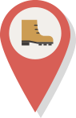
ウォーキング＆サイクリング
キャンプ場からスキー場まで通じる標高1,000ｍの道路を行くと何ヶ所かの絶景（谷川連峰を望む）ビューポイントの景色が美しい！キャンプ場の裏山には、自然花苑・アナベルの丘がありスタンプラリーも開催されます。